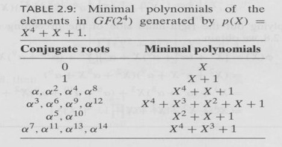

The generator polynomial of a t-error correcting is the LCM of the minimal polynomials
of the elements α, α2, ..., α2t.
Refer to the following table

Procedure:
Initially, all the polynomials are in grey background.
Clicking on polynomial changes its background color to from grey to green. All the
polynomials with green background are the selected polynomials.
To deselect a polynomial, click on it again. Its background color changes back to grey.
Select all the minimal polynomials and click on Submit.
Observations section displays whether all the correct polynomials are selected or
not.
If all the correct minimal polynomials have been selected, a field to enter the
generator polynomial will be displayed.
Use only lower case x in the field. Expressions like x2 can be entered
in the field by typing x^2 on the keyboard.
1, +, x, x^2, x^3, ..., x^10 and their combinations need to be entered in the field in
this task. Do not enter any other symbols.
Enter the polynomials in either increasing order of degree (from the lowest degree
term to the highest) or decreasing order of degree (from the highest degree term to
the lowest). For example, only 1+x^2+x^7+x^8 or x^8+x^7+x^2+1 is allowed. Any other permutation is not allowed.
For example x^7+1+x^2+x^8 is not allowed.
Enter the encoding polynomial in the field and click on Submit.
The correctness of the entered answer is displayed in Observations.
Next - Displays the next example.
Previous - Displays the previous example.
Consider the 2-error correcting BCH code of length 15
defined over GF(24) generated by the polynomial x4+x+1.
Select the minimal polynomials
Observations
Consider the 3-error correcting BCH code of length 15
defined over GF(24) generated by the polynomial x4+x+1.